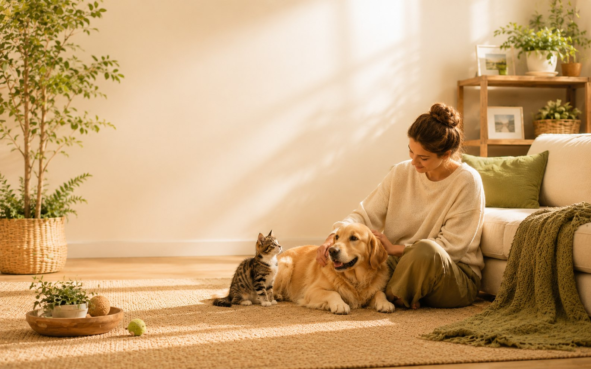
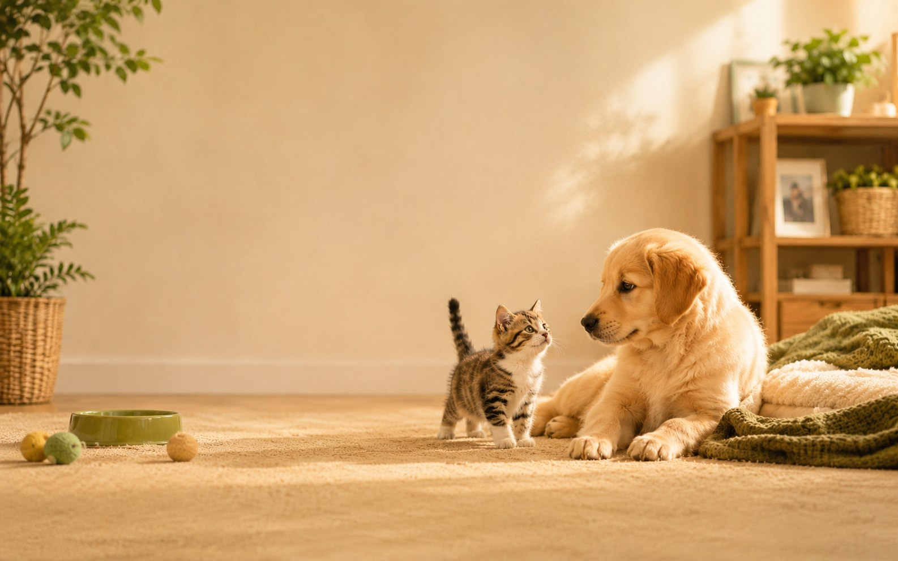
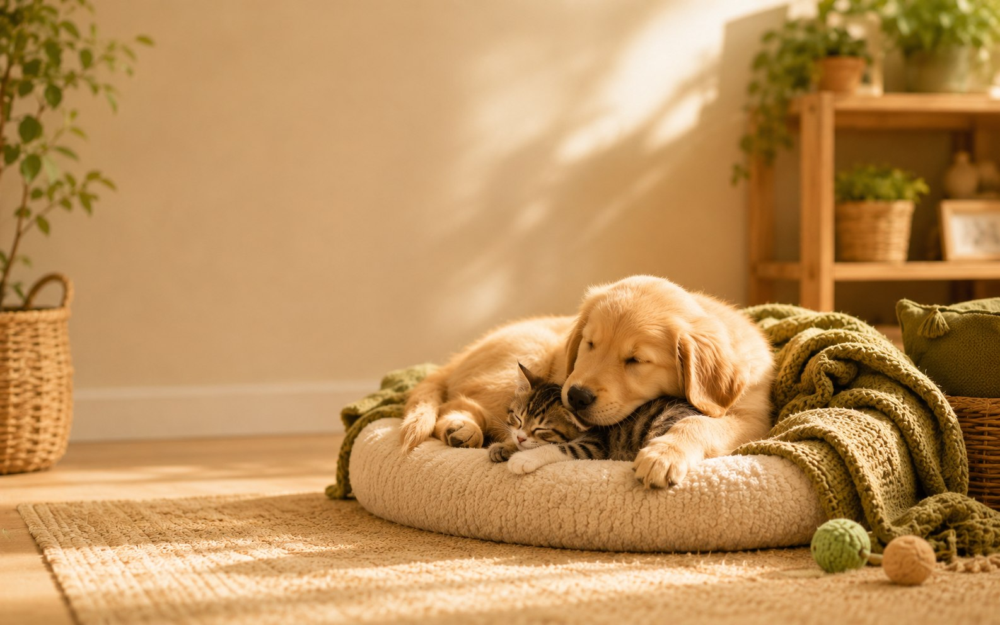
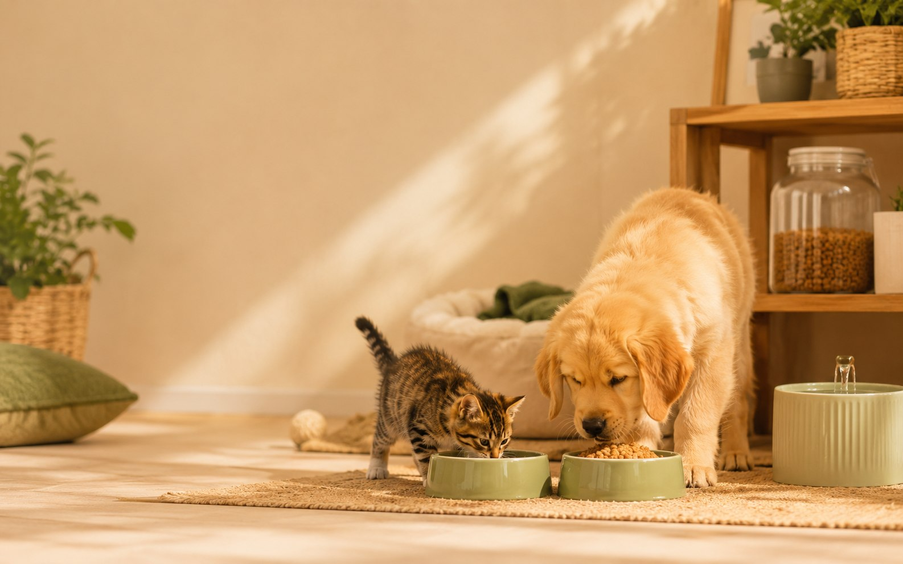
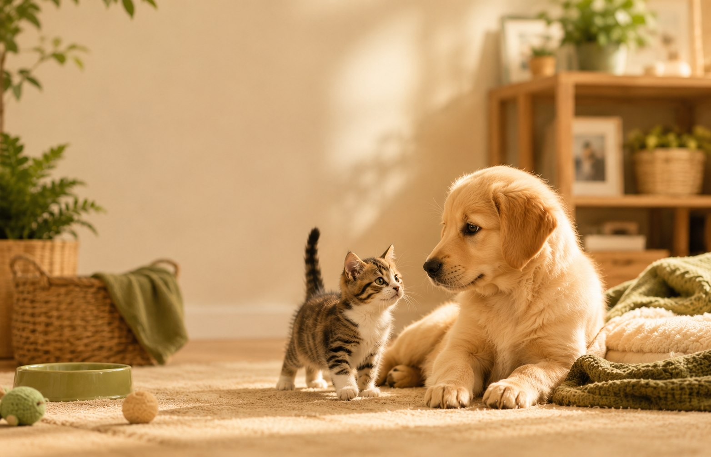
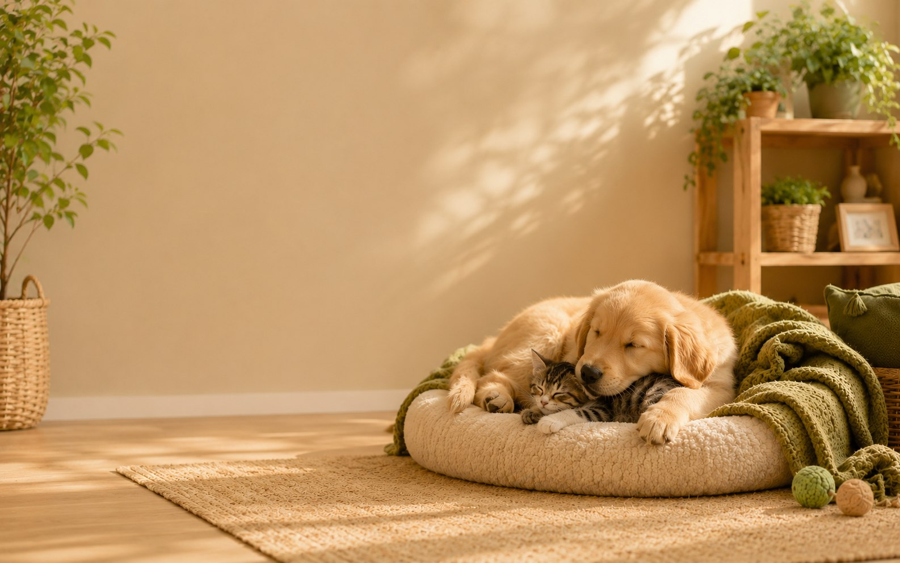

看懂過度安靜、不吃不喝、縮著不動背後的真正原因。
DUGREAT PET KNOWLEDGE
到家適應
情緒安全感
飲食與觀察
看懂毛孩訊號， 把照顧變成更安心的陪伴
很多新手以為「牠乖、牠沒事、牠不叫」就代表適應得很好，但犬貓真正的狀態，往往藏在食慾、便便、休息、緊張反應與互動節奏裡。肚格瑞把複雜的照護知識，整理成更溫柔、更好理解的內容，陪你從第一次養毛孩開始，就少一點慌張、多一點把握。
不是一直抱，而是讓牠知道自己可以靠近，也可以先休息。
從換食、便便、精神狀態，建立更穩定的新手照護基礎。

主題重點
新手最常忽略的，通常不是用品，
而是對毛孩狀態的理解。
而是對毛孩狀態的理解。
內容風格
真實情境 × 清楚解說 × 溫柔陪伴



WHY DUGREAT
不是只整理知識，而是幫你把「不確定」慢慢變成「有方向」。
從便便、食慾、精神到互動節奏，學會判讀日常小訊號。
把新手最容易慌張的情境拆開講清楚，照顧更有依據。
用溫暖但不空泛的方式，陪飼主與毛孩一起建立安全感。
CORE TOPICS
從三個最重要的核心主題開始，建立更穩的照護底盤
如果你剛開始養犬貓，最先需要的不是一次買齊所有用品，而是先建立觀察與理解的能力。以下三個主題，是最值得優先掌握的基礎。
到家適應
牠很安靜，不一定代表牠適應得很好
剛到家時的安靜、縮著不動、食慾下降，有時是壓力與警戒，不一定是穩定。理解這件事，能避免你過早把互動推得太快。
- 先給安靜、安全、熟悉的休息區
- 先觀察身體語言，再決定是否靠近
- 不要把「不吵不鬧」誤認為「沒問題」
情緒安全感
真正的安全感，是牠知道自己有選擇
安全感不是一直抱著牠，而是讓牠知道：這個空間不會逼迫我、這個人不會一直追著我、我可以選擇靠近，也能保有距離。
- 不強迫互動，留給牠退開的空間
- 降低噪音與視覺刺激，先穩定環境
- 陪伴不等於打擾，安靜的存在也很重要
飲食與腸胃
第一週先求穩，不要急著一次換太多
新環境已經會讓犬貓緊張，如果飲食又同時大變動，就更容易出現軟便、食慾波動或腸胃不適。穩定是第一原則。
- 先沿用熟悉主食，再慢慢轉換
- 同步觀察便便、食慾與精神變化
- 看到異常時，先記錄而不是只靠猜測
NEW OWNER JOURNEY
如果你剛要帶幼犬幼貓回家，建議先走這四個步驟
比起急著互動、急著餵很多東西、急著判斷牠喜不喜歡你，更重要的是先把照顧節奏放慢。下面這個流程，能幫你少走很多冤枉路。
先整理環境
準備固定休息區、飲水區、食物區與安靜角落，讓牠進門後有可以先待著的地方。
先讓牠觀察
不要一回家就所有家人圍上去。先讓牠聞味道、聽聲音、看環境，慢慢建立熟悉感。
先穩定飲食
第一天先維持熟悉食物與飲水，不用急著餵太多補品或零食，讓腸胃先穩住。
先記錄狀態
觀察便便、食慾、喝水、睡眠、活動與精神狀態，比只看表面安靜更有判斷依據。
DETAILED GUIDES
更完整、更有深度的照護解說
每一個主題都不只是一句提醒，而是結合常見誤區、觀察重點與實際可做的步驟，幫助你把內容真正用在日常生活裡。
01 到家適應
牠不是乖，只是還在用自己的方式確認：這裡安不安全。
剛到家的第一天，很多毛孩會顯得安靜、不太吃、不太動，甚至看起來「超好帶」。但這種狀態有時不是適應，而是牠還在高度警戒。此時如果太快抱牠、一直逗牠、太多人同時靠近，反而會讓牠壓力更大。
常見誤區
以為牠不吵不鬧就是穩定，所以立刻開始過度互動。
你可以這樣做
先讓牠待在固定區域，減少刺激，讓牠自己決定什麼時候探索。
02 情緒安全感
信任感不是被摸出來的，而是被尊重出來的。
對毛孩來說，真正的放鬆不是你多熱情，而是牠知道「我可以按照自己的速度靠近」。新手最容易忽略的，其實就是節奏太快：太快碰觸、太快要求互動、太快期待牠馬上親人。
觀察訊號
願意慢慢靠近、會主動聞你、開始放鬆躺下，這些比馬上討抱更能代表安心。
陪伴原則
把自己放在「可被信任的存在」，而不是「一直主動打擾的存在」。
03 飲食與換食
新環境已經很忙，先不要讓腸胃也一起忙起來。
剛到家第一週，穩定比豐富更重要。即使你很想給牠最好的，也不代表第一天就要換新飼料、餵一堆零食或保健品。當環境壓力還沒下降，腸胃通常也會比較敏感。
先做什麼
先維持熟悉食物、固定餵食時間，建立規律感。
要看什麼
觀察食慾、便便形狀、便便氣味、精神活力與喝水狀況。
CONTENT LIBRARY
精選圖文主題
網站內容延伸自 IG 的實用圖文主題。未來你可以在這裡慢慢累積更多犬貓知識文章，讓網站不只是名片，而是會持續成長的品牌內容庫。


FREE SUPPORT
把「我是不是做錯了？」變成「我知道下一步要看什麼」
新手最需要的，往往不是更多焦慮，而是一份清楚的觀察框架。你可以把這裡當作第一天、第一週與日常照護時的快速參考，建立更穩定的判斷依據。
01觀察食慾、便便、精神與休息狀態
02優先理解狀態，再決定要不要調整做法
03遇到持續異常時，及早記錄並尋求獸醫協助
新手第一週觀察重點
Daily Check
- 今天是否有主動喝水、吃飯？
- 便便形狀、氣味與次數是否穩定？
- 有沒有明顯躲藏、發抖、喘氣或僵硬？
- 是否願意放鬆休息，而不是一直高度警戒？
- 精神與互動是否比前幾天更自然？

BREED KNOWLEDGE
犬貓品種知識館


不只介紹外表與個性，更深入到「這個品種日常該怎麼照顧」。
不同犬貓品種在活動量、毛髮管理、相處節奏、體重控制與健康觀察上，都可能有不同重點。肚格瑞已收錄 18 個常見品種頁，幫助你理解牠們的日常需求。
犬種精選柴犬 Shiba Inu獨立、警覺，適合尊重節奏的陪伴方式
貓種精選布偶貓 Ragdoll溫和親人，但仍需要體重、毛髮與日常照護觀念
犬種精選貴賓犬 Poodle聰明親人，互動與毛髮管理同樣重要
貓種精選英國短毛貓 British Shorthair沉穩安靜，但更要留意體重與活動量
犬種精選柯基犬 Pembroke Welsh Corgi外型小巧卻有牧犬的活力；運動、體重與背部保護都值得提前規劃。
貓種精選暹羅貓 Siamese善於互動、聲音表達多；需要陪伴、遊戲與穩定的生活節奏。
貓種精選西伯利亞森林貓 Siberian結實好動、厚毛耐寒；需要攀爬遊戲與梳毛，也不能保證對過敏者安全。
犬種精選比熊犬 Bichon Frise親人愛玩、白色捲毛醒目；規律美容、牙齒與膝關節照護都重要。
ABOUT DUGREAT
品牌精神
內容主軸
適合誰閱讀
聯絡方式
肚格瑞想做的，是一個讓新手願意停下來、真正看懂毛孩的地方。
我們相信，好的犬貓知識不該只是冷冰冰的說明，也不該只有碎片提醒。它應該同時有溫度、有畫面，也有足夠清楚的結構，讓新手在最容易慌張的時候，能找到真正有幫助的方向。
看懂訊號、尊重節奏、用更安心的方式陪伴犬貓成長。
到家適應、情緒安全感、飲食換食、腸胃觀察與新手照護細節。
第一次養犬貓、正在適應期、想更理解毛孩狀態的飼主。
FOLLOW DUGREAT
如果你也想更穩定地照顧犬貓，歡迎一起把知識慢慢累積起來。
網站會持續整理更完整的主題內容，Instagram 也會同步更新圖文重點。當你開始理解毛孩的日常訊號，照顧就不只是緊張應付，而會慢慢變成更有信心的陪伴。